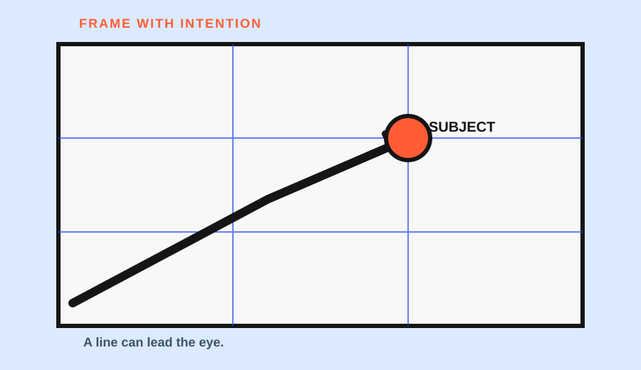

A leading line is not a special object that only appears in roads, bridges, and railway tracks. It is any visible direction that can carry attention through the frame: a sidewalk edge, a table edge, a strip of window light, a fence, a row of books, or the alignment of several objects.
Use a three-part test before pressing the shutter: where does the line begin, what subject does it pass or point toward, and where does it end? If the line reaches the subject and helps the viewer find it, the line is doing useful compositional work. If it leaves the frame first, the line may be competing with the subject.
Find lines in ordinary scenes
Nikon’s composition guidance describes leading lines as lines that carry the viewer’s eye through a photograph toward a specific area of interest. Adobe’s beginner perspective guide also explains how parallel lines can converge toward a vanishing point and give structure to a frame.
Look for edges before looking for dramatic scenery. The border between pavement and grass can point toward a person. A window shadow can form a diagonal across a wall. The edge of a table can direct attention toward a mug. A row of chairs, shelves, or tree trunks can create alignment even when no single object looks like a “line.”
The line does not have to be perfectly straight. Curves can move the eye more slowly, while diagonals can create stronger directional tension. The useful question is whether the direction supports the subject, not whether the line matches a textbook example.
Trace the endpoint
The strongest line in a scene is not always the best line for the photograph. A bright road may pull attention toward the horizon while the subject sits near the edge. A shadow may point toward a blank wall. A table edge may lead past the mug and out of the frame.
Trace the line with a finger on the screen or draw it on a quick sketch. Then mark the endpoint. If the endpoint is not the subject, try one of three changes: move the camera so the line meets the subject, change the subject’s position, or remove the line from the frame.
This endpoint check keeps “leading lines” from becoming a decorative label. A line that leads away is still visually strong; it is simply serving a different destination.
Move your viewpoint
Changing position can change both the direction and the strength of a line. Lowering the camera may make a sidewalk edge occupy more of the foreground. Moving sideways can make two edges converge toward a different point. Stepping back can reveal the full path; moving closer can turn one section of the line into a bold shape.
These are conditional experiments, not guaranteed effects. The best viewpoint is the one that makes the line’s relationship with the subject easiest to read. Keep the subject and line in mind while moving instead of collecting random angles.
Three everyday examples
Sidewalk edge and a person. Suppose a pavement boundary runs from the lower corner toward a person standing near a doorway. Make one frame where the boundary reaches the person, then a second where it exits to the side. Compare which frame makes the person easier to find.
Window shadow and a mug. A strip of light may cross a wall and point toward a mug on a table. If the strip ends before the mug, rotate the camera or move the mug slightly. The purpose is not to force the mug into the brightest patch; it is to see whether the direction makes the subject more legible.
Table edge and a row of objects. A table edge can lead toward one object, but repeated objects may compete for attention. Choose one endpoint and remove or reposition the others if the path becomes ambiguous.
Each example has the same check: line, subject, endpoint. The setting changes, but the reasoning stays specific to the frame.
When a line leaves the frame
Nikon notes that leading lines can guide the eye through—and sometimes out of—the photograph. That is not automatically a failure. A line leaving the frame can create openness or suggest a larger world beyond the image. It becomes a problem when the intended subject is supposed to be the destination but the line keeps pulling attention away.
If the line exits too soon, try cropping or changing viewpoint. If the line exits deliberately, make the departure part of the subject’s meaning and check that no brighter object competes with it.
The line-tracing sketch
For one ordinary scene, draw a small rectangle and mark four things:
- The line’s starting point.
- The line’s direction or curve.
- The subject you want the viewer to notice.
- The line’s endpoint.
Make one frame before changing the viewpoint and one after. Write a sentence for each: “The line arrives at the subject,” or “The line exits before the subject.” This turns a composition term into a repeatable observation.
Leading lines are most useful when they are discovered rather than imposed. Start with what the scene already gives you, then move until the line has a clear job.
Brightness and contrast can also change how strongly a line competes with the subject. A dark edge against a bright wall may pull attention more than a faint edge in the same position. Check the line at the final viewing size, not only while zoomed into the camera preview.
Research sources
Sources
- 5 Easy Composition Guidelines — Nikon USA
- Perspective photography: A beginner’s guide — Adobe
- Photography tips for beginners: how to take better photos — Adobe
- Photographic guide for field researchers — UK Government